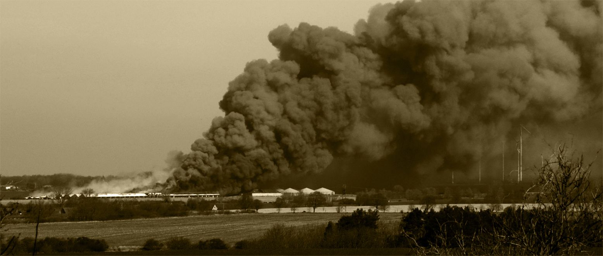

Infoarchiv
2006 am Tag der Befreiung erschien den Einwohnern der Gemeinde Alt Tellin
auf der Ratsversammlung in der Storchenbar der damals schon verurteilte Agrarkriminelle Straathof.
Draussen vor der Tür wurde erstmals demonstriert: gegen den Plan, am Tollensetal eine Ferkelfabrik für 10.000 Sauen bauen zu lassen.
Damit wurde eine Entwicklung eingeleitet, die in MV zum sogenannten Masterplanprozess der Landesregierung führte.
Hier ein kleiner Ausschnitt aus der vorherigen Aktionsfülle:
- 2006 http://www.saustall-tellin.de/infoarchiv/flugblatt/Flugblatt%20Tellin%2001.pdf
2007 http://www.saustall-tellin.de/infoarchiv/flugblatt/Flugblatt%20Tellin%2002.pdf
2009 http://www.milaninfo.de/aktuelles-archiv/Agrarindustrie/2009-03-30-gemeinsamer-Aufruf.html
2015 http://www.saustall-tellin.de/infoarchiv/flugblatt/Flugblatt%20Tellin%2003-web.pdf
Inzwischen erhielt der Agrarkriminelle auch in Deutschland ein bundesweites Tierhaltungsverbot.
Doch der Gerichtsprozess zur Klage des BUND gegen die 2012 erteilte Baugenehmigung ist bis heute noch nicht abgeschlossen.
Und so konnten am Tollensetal bisher einer Unmasse von Ferkeln die Schwänze abgeschnitten werden.
Ein Ende ist leider immer noch nicht absehbar.
 Am ersten Verhandlungstag im Verwaltungsgericht Greifswald: der Leiter des beklagten Staatlichen Amtes für Landwirtschaft und Umwelt zwischen dem Geschäftsführer der LFD Holding und dem Betriebsleiter der Ferkel - und Güllefabrik am Tollensetal
Am ersten Verhandlungstag im Verwaltungsgericht Greifswald: der Leiter des beklagten Staatlichen Amtes für Landwirtschaft und Umwelt zwischen dem Geschäftsführer der LFD Holding und dem Betriebsleiter der Ferkel - und Güllefabrik am Tollensetal
Und so weiter?
Die Genehmigung des Antrages zur Errichtung der Ferkel- und Güllefabrik am Tollensetal wurde offiziell am 7. Oktober 2010 bekanntgegeben. Die Klage dagegen wurde am 15.3.2017 erstmals verhandelt. Auch wenn das rechtstaatliche Verfahren viel zu komplex sein soll, um es hier umfassend darzustellen, ein paar Zusammenhänge müssen trotzdem beleuchtet werden. Die jahrelange Verschleppung des Verhandlungsbeginns nach dem beschleunigten vorzeitigem Bau - und Produktionsbeginn hat es dem Agrarkriminellen Straathof ermöglicht, trotz 700 Einwendungen 1-2 Millionen Ferkel durch zigtausende inzwischen verbrauchte Sauen zu produzieren, ohne dass sein Brandschutzkonzept einer gerichtlichen Überprüfung standhalten musste. Jetzt erst könnte das Gericht hinterfragen, ob die genehmigte Kombination von Massentierhaltung und Gülletanks mit Biogas auf engsten Raum und in dieser Größenordnung wirklich zu verantworten sei. Beim Anhörungsverfahren vor der Genehmigung wurden die Probleme Sabotage und Terrorgefahr als nicht relevant vom Tisch gewischt. Inzwischen aber wissen wir, dass neben Naturkatastrophen auch irrationale Handlungsmotive von Einzeltätern großen Schaden anrichten können. Warum wohl werden unsere Bürgerrechte eingeschränkt bei Terrorverdacht? Das soll unsere Sicherheit garantieren. Und die Sicherheit der Schweine? Schon 2002 wurde der Tierschutz als Staatsziel im Grundgesetz fixiert. Wie kann vor diesem Hintergrund ernsthaft behauptet werden, es bräuchte weder Fluchtwege noch Evakuierungsplan für die Insassen der Tierfabrik, weil nichts brennen könne, weil nichts sein kann was nicht sein darf. Aber selbst die Demokratie darf nicht alternativlos sein. Ein Plan B für den Notfall im Sinne von „wir könnten auch anders“ kann überlebenswichtig sein. Statt dessen hat die LFD (die gewandelte Straathof-Holding) plan B communication mit einer Imagekampagne für Plan A beauftragt: bis 2020 soll die „Landwirtschaftliche Ferkelproduktion Deutschland zum bedeutendsten europäischen FerkelZüchter aufsteigen. Mit Agrarindustrie 4.0 ohne wenn und aber. Und falls es trotz alledem einmal brennen sollte, dort wo nichts brennen kann... dann müssen alle Feuerwehren aus allen Umlandgemeinden ausrücken. Und dann darf es in keinem dieser Dörfer brennen, denn dort leben immer mehr nicht mehr so mobile alte Menschen. Es wird hier immer deutlicher, dass „MV tut gut“ auf keinen Fall mit „Landlust“ verwechselt werden sollte.
TOLLENSETALER STIMME 2017 - 03 /Selbsthilfe/ S. 6-8

… noch lange nach Feierabend zog die gewaltige Rauchwolke ostwärts - über die A20 nach AnklamLiebe Freunde, Bewohner und Gäste des Tollensetals!
„Wir befinden uns erklärtermaßen in einer Krise und eine Umkehr aus der Sackgasse wird ohne die Beschäftigung mit deren Ursachen nicht möglich sein. Das „weiter so“ führt leider nicht aus dem Schlamassel… Solange Profitmaximierung die Umverteilung der Vermögen beschleunigt, wird die Zahl der armen Schweine also weiter rasant zunehmen…“ Das ist zwar „Schnee von gestern“ aus unserer verspäteten Jahresauftakt-Zeitung aber die Hoffnung, so „ein paar Spuren zu einer besseren Welt zu finden“ ist ungebrochen. 2020 fragten wir nach dem Erstickungstod von 1.000 Tieren in der „modernsten“ Schweinefabrik“ Europas: „Wie lange kann das noch so weitergehen?“ Jetzt haben wir ein tragische Situation, die zum Himmel schreit und alles im Rahmen der geltenden Gesetze.
Darf das so weitergehen?